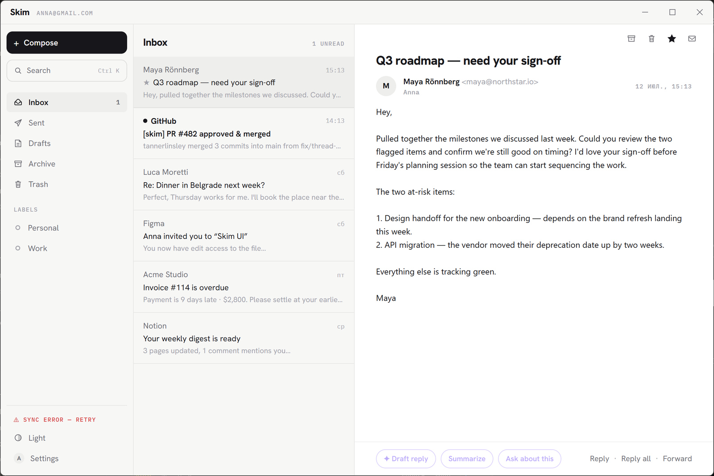
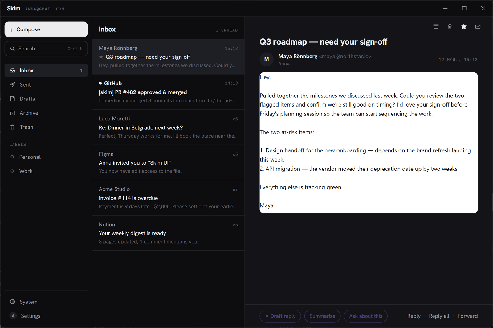

A fast, native, minimalist email client for Windows. Rust core, tiny footprint, no Electron — and AI strictly on your terms.
Free & open source · ~5 MB installer · no admin rights · grab Skim_x.y.z_x64-setup.exe

One violet accent, reserved exclusively for AI. Everything else stays out of your way.
Most mail clients are either web apps in a trench coat or twenty-year-old battleships. Skim is neither.
Rust core + WebView2 UI (Tauri 2). A few-megabyte installer, instant cold start, tiny idle memory. No Electron.
Mail syncs over IMAP straight into a local SQLite cache. Works offline, search is instant, zero telemetry.
Bring your own key — Anthropic or OpenRouter. Requests go directly from your machine to the provider. No key? Still a great client.
11 languages, light & dark themes, keyboard-first. Switchable at runtime, no restart.
One account, three panes, and a command palette that gets out of your way.
Gmail, Outlook, Yahoo, iCloud, or any IMAP/SMTP server. Google sign-in via OAuth or an app password. Autoconfig for the big providers.
Archive, delete, star, read/unread and send apply instantly and queue in SQLite — Skim syncs when the network returns.
Full-text search (SQLite FTS5) over subject, sender, recipients and bodies. Ctrl+K palette jumps anywhere as you type.
Conversation threading via References / In-Reply-To with subject fallback. Reply, reply-all and forward with proper headers.
IMAP IDLE push + polling, new-mail notifications with a mark-read action. Lives in the tray, syncing in the background.
HTML sanitized in Rust (ammonia), rendered in a sandboxed iframe with strict CSP. Remote images blocked by default.
Paste an Anthropic or OpenRouter key and the ✦ violet buttons light up. Your key, your bill — no markup, no proxy, no accounts. Stored in Windows Credential Manager.

Download the latest installer — the .exe (NSIS) installs per-user without admin rights; an .msi is published for managed environments. Requires Windows 10/11 with WebView2 (preinstalled on Windows 11).